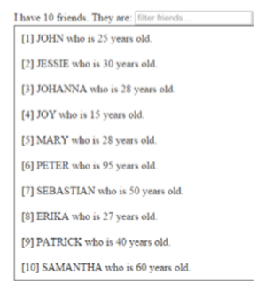

Realizar una aplicación que muestre por pantalla, mediante directivas de Angular, la siguiente imagen.
Debemos ser capaces de filtrar estos datos mediante el input superior.
Aparte, los datos serán guardados en un array de objetos JSON óptimo para dicha funcionalidad.
I have {{listaAmigos.length}} friends. They are: